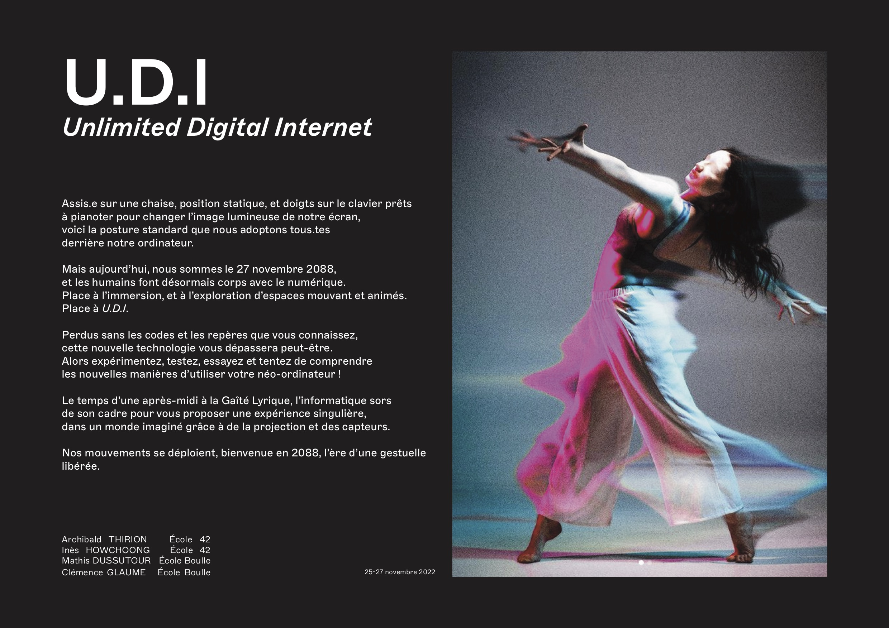
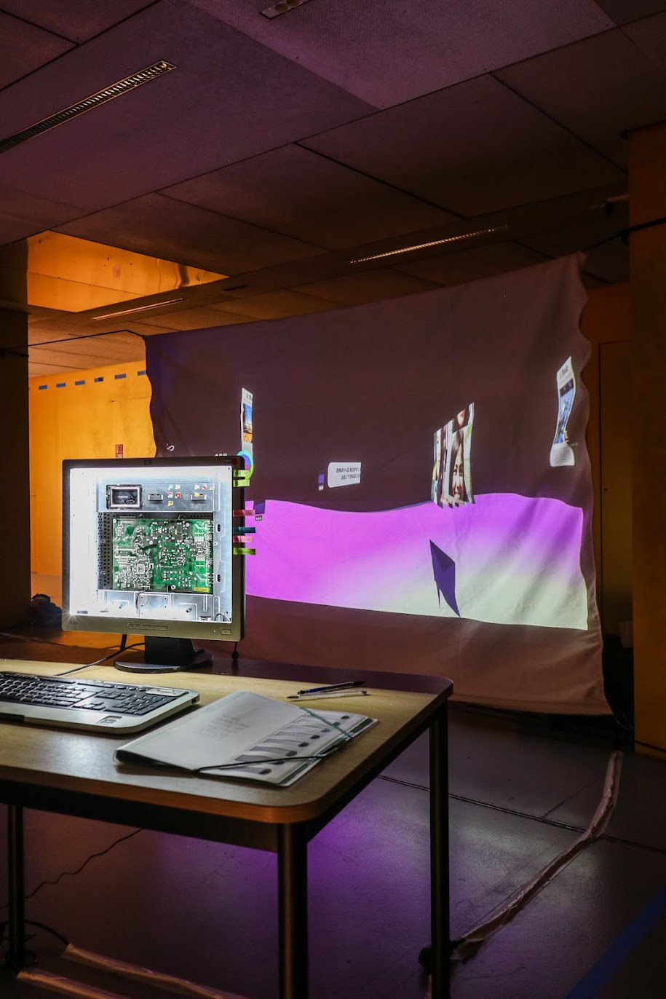

Le Weekend du 27 Novembre 2022, j'ai collaboré pendant 2 jours avec 2 étudiants de l'école Boulle et un étudiant de l'école 42 à l'occasion du Hackathon organisé à la Gaiété Lyrique.
Direction l'an 2088 avec cette question : du nu à l’avatar en passant par le cyborg, comment le corps s’efface ou s’impose face aux technologies dans le spectacle vivant ? Avec Gestuelles, qui prend la forme d'un hackathon suivi d'une exposition regroupant les installations produites par les équipes participantes, les étudiantes et les étudiants de l'École Boulle et de l'École 42 proposent d'imaginer l'avenir en questionnant notre rapport au corps, aux technologies et à la scène. Du code au design, de l'interaction à l'interface, Gestuelles invite à stimuler, à apprendre, à jouer, à inventer.
Avec mes collaborateurs, nous nous sommes interrogés sur le rapport entre le corps, la technologie et comment ces deux entités formattent notre gestuelle. On a eu l'idée de repenser complètement l'expérience utilisateur d'un ordinateur partant du Desktop à la souris.

On a créer en quelques mots un desktop immersif influencée par le célébre Desktop Colline de Windows construit grâce à Unity. Ce desktop est controlable via des capteurs de mouvements géré par Arduino inspiré des mouvements du thérémine.
